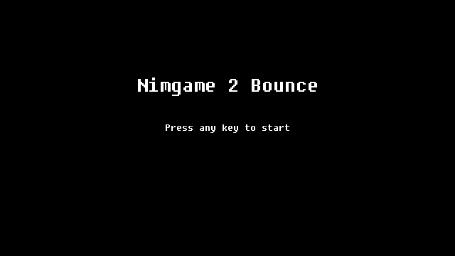
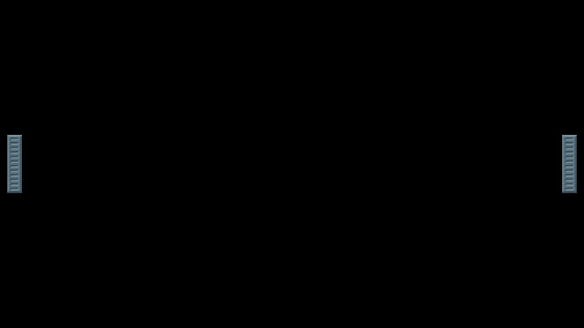
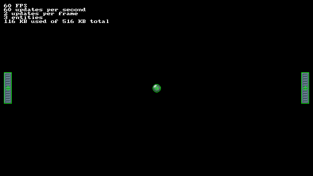
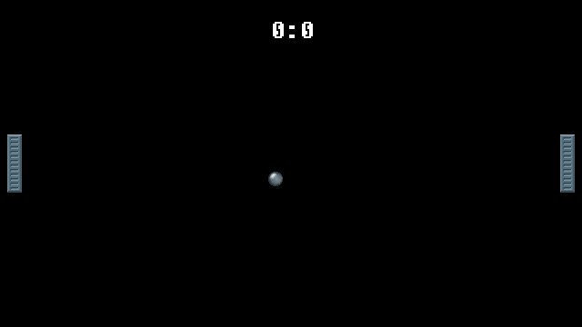

BOUNCE GAME
Introduction
This tutorial is designed to give an example of the basic structure of Nimgame2 applications. The following concepts will be explained here:
- engine initialization
- assets loading
- scenes
- texture graphics
- text graphics
- entity objects
- colliders and collisions
- keyboard input
- pausing
- sound
Assets
For any basic game you'll need three basic kinds of assets:
- fonts
- graphics
- sounds
So, the assets directory of the game will be structured as shown here:
./data/
|
|-- fnt/
|-- gfx/
|-- sfx/
For rendering all text in the game we will use good old Fixedsys Excelsior (at "data/fnt").
We will need just two graphic assets here: the ball and the paddle (at "data/gfx").
As for the sounds, we will not worry about it for now.
Starting to Code
All source code will be placed into the "src" directory. Let's start with a file for storing constants and variables that might be accessed from different points of the game.
data.nim
import
nimgame2 / [
assets,
scene,
types,
]
const
GameWidth* = 640
GameHeight* = 360
GameTitle* = "Nimgame 2 Bounce"
var
titleScene*, mainScene*: Scene
As you can see, we will have two game scenes: title and main. We will create a souce file for each of them.
title.nim
import
nimgame2 / [
nimgame,
scene,
types,
],
data
type
TitleScene = ref object of Scene
proc initTitleScene*(scene: TitleScene) =
initScene scene
proc free*(scene: TitleScene) =
discard
proc newTitleScene*(): TitleScene =
new result, free
initTitleScene result
method event*(scene: TitleScene, event: Event) =
if event.kind == KeyDown:
game.scene = mainScene
main.nim
import
nimgame2 / [
scene,
],
data
type
MainScene = ref object of Scene
proc initMainScene*(scene: MainScene) =
initScene scene
proc free*(scene: MainScene) =
discard
proc newMainScene*(): MainScene =
new result, free
initMainScene result
method show*(scene: MainScene) =
echo "Switched to MainScene"
And, finally, we will create a main source file:
bounce.nim
import
nimgame2 / [
nimgame,
settings,
types,
],
data,
title,
main
game = newGame()
if game.init(GameWidth, GameHeight, title = GameTitle, integerScale = true):
# Init
game.setResizable(true) # Window could be resized
game.minSize = (GameWidth, GameHeight) # Minimal window size
game.windowSize = (GameWidth * 2, GameHeight * 2) # Double scaling (1280x720)
game.centrify() # Place window at the center of the screen
# Create scenes
titleScene = newTitleScene()
mainScene = newMainScene()
# Run
game.scene = titleScene # Initial scene
run game # Let's go!
During the process of development we will rebuild the game constantly, so let's create some basic scripts for that:
build.debug.sh
#!/bin/sh
cd src
nim c --out:../ng2bounce bounce.nim
cd ..
build.release.sh
#!/bin/sh
cd src
nim c --out:../ng2bounce -d:release --opt:speed bounce.nim
rm -rf nimcache
cd ..
Or, if you are working on Windows:
build.debug.bat
cd src
nim c --out:..\ng2bounce.exe bounce.nim
cd ..
build.release.bat
cd src
nim c --out:..\ng2bounce -d:release --opt:speed --app:gui bounce.nim
rmdir /s /q nimcache
cd ..
So, at this moment, our directory structure looks like this:
./ng2bounce/
|
|-- build.debug.sh
|-- build.release.sh
|
|-- data/
| |
| |-- fnt/
| | |
| | |-- FSEX300.ttf
| |
| |-- gfx/
| | |
| | |-- ball.png
| | |-- paddle.png
| |
| |-- sfx/
|
|-- src/
|
|-- bounce.nim
|-- data.nim
|-- main.nim
|-- title.nim
When we run our "build.debug.sh" script, we should get an executalbe "ng2bounce" that just shows a black screen and outputs a "Switched to MainScene" message to the console when any keyboard key is pressed.
Title Screen
We will start with populating the title screen. There will be two text graphics: the title of the game and a subtitle hint under it.
To render any text we need to load our font first.
data.nim
import
nimgame2 / [
...
font,
...
truetypefont,
...
]
...
var
...
defaultFont*, bigFont*: TrueTypeFont
proc loadData*() =
defaultFont = newTrueTypeFont()
if not defaultFont.load("data/fnt/FSEX300.ttf", 16):
echo "ERROR: Can't load font"
bigFont = newTrueTypeFont()
if not bigFont.load("data/fnt/FSEX300.ttf", 32):
echo "ERROR: Can't load font"
proc freeData*() =
defaultFont.free()
bigFont.free()
We will call the loading procedure from our main file.
bounce.nim
... loadData() # Call it before any scene initialization # Create scenes ...
And finally, we will create our entities in initTitleScene() procedure.
title.nim
import
nimgame2 / [
entity,
font,
...
textgraphic,
...
],
...
proc initTitleScene*(scene: TitleScene) =
...
# Create a title text graphic with a big font
let titleText = newTextGraphic(bigFont)
titleText.setText GameTitle # Set the text to render
let title = newEntity() # Create a title entity
title.graphic = titleText # Assign the title text graphic
title.centrify() # Set the origin point to the graphic's center
title.pos = (GameWidth / 2, GameHeight / 3) # Set the title position on the screen
scene.add title # Add title entity to the scene
# Create a subtitle text graphic with a default font
let subtitleText = newTextGraphic(defaultFont)
subtitleText.setText "Press any key to start" # Set the text
let subtitle = newEntity() # Create a subtitle entity
subtitle.graphic = subtitleText # Assign the subtitle text graphic
subtitle.centrify() # Set the origin point to the graphic's center
subtitle.pos = game.size / 2 # Place to the center of the screen
scene.add subtitle # Add subtitle entity to the scene
...
After running the game we should see this screen:

Loading Assets
Though we only have two graphic assets now it is surelly an overkill to use an asset manager, but it is a good opportunity to give an example of its usage.
data.nim
import
nimgame2 / [
...
texturegraphic,
...
]
...
var
...
gfxData*:Assets[TextureGraphic]
proc loadData*() =
...
gfxData = newAssets[TextureGraphic](
"data/gfx",
proc(file: string): TextureGraphic = newTextureGraphic(file))
proc freeData*() =
...
for graphic in gfxData.values:
graphic.free()
As you can see, we pass two arguments to the asset manager constructor: a path to the assets and a procedure to load them. The procedure recieves a file name and should return an object to be loaded in our collection.
Note: If you try to load any directory containing other types of files, the loading procedure will throw an error.
Paddles
Let's start with creating paddle entity. This object will represent players in this game.
paddle.nim
import
nimgame2 / [
assets,
graphic,
input,
nimgame,
entity,
],
data
const
Speed = 250.0 # Speed (in pixels per second)
type
PaddlePlacement* = enum
ppLeft, ppRight
PaddleControl* = enum
pcPlayer1, pcPlayer2
Paddle* = ref object of Entity
control*: PaddleControl
As you can see, two enums represent the paddle position and how it will be controlled.
paddle.nim
...
proc initPaddle*(paddle: Paddle, placement: PaddlePlacement, control: PaddleControl) =
paddle.initEntity()
paddle.graphic = gfxData["paddle"]
paddle.centrify() # Set the center point offset
# Set position
paddle.pos = case placement:
of ppLeft: (paddle.graphic.w.float, game.size.h / 2)
of ppRight: (float(game.size.w - paddle.graphic.w), game.size.h / 2)
paddle.control = control # Set control mode
proc newPaddle*(placement: PaddlePlacement, control: PaddleControl): Paddle =
new result
result.initPaddle(placement, control)
As you see, for now we need to have only one param in our Paddle object — a control state, that we will need in the update() method.
paddle.nim
...
method update*(paddle: Paddle, elapsed: float) =
var movement = Speed * elapsed
# Read input
case paddle.control:
# First player
of pcPlayer1:
if ScancodeQ.down: paddle.pos.y -= movement # Move up
if ScancodeA.down: paddle.pos.y += movement # Move down
# Second player
of pcPlayer2:
if ScancodeUp.down: paddle.pos.y -= movement # Move up
if ScancodeDown.down: paddle.pos.y += movement # Move down
# Check for the screen borders
paddle.pos.y = clamp(
paddle.pos.y,
paddle.center.y,
game.size.h.float - paddle.center.y)
We calculate movement distance by multiplying the speed and time elapsed since previous update. Finally, don't forget to check for the screen borders.
Now we just need to add two Paddle entities into the main scene.
main.nim
import
nimgame2 / [
scene,
],
data,
paddle
type
MainScene = ref object of Scene
leftPaddle, rightPaddle: Paddle
proc initMainScene*(scene: MainScene) =
initScene scene
# left paddle
scene.leftPaddle = newPaddle(ppLeft, pcPlayer1)
scene.add scene.leftPaddle
# right paddle
scene.rightPaddle = newPaddle(ppRight, pcPlayer2)
scene.add scene.rightPaddle
...
Now the main scene should look like this:

Colliders
To detect collisions between the ball and paddles we need to init colliders for these entities. All collider counstructors accept a parent entity reference, center point offset, and collider dimensions that depend on a particular collider type. We will use a simple box collider for our paddles.
paddle.nim
... proc initPaddle*(paddle: Paddle, placement: PaddlePlacement, control: PaddleControl) = ... # Collisions paddle.tags.add "paddle" paddle.collider = paddle.newBoxCollider((0.0, 0.0), paddle.graphic.dim) paddle.collider.tags.add "ball" ...
The "paddle" and "ball" tags will be used to filter out the collisions.
Now we define a Ball entity the same way, but using the circle collider instead of a box one, passing the circle radius to its constructor.
ball.nim
import
nimgame2 / [
assets,
entity,
graphic,
nimgame,
types,
utils,
],
data
type
Ball* = ref object of Entity
proc reset*(ball: Ball) =
ball.pos = game.size / 2 # place to the center of the screen
proc initBall*(ball: Ball) =
ball.initEntity()
ball.graphic = gfxData["ball"]
ball.centrify() # Set the center point offset
ball.reset()
# Collisions
ball.tags.add "ball"
ball.collider = ball.newCircleCollider((0.0, 0.0), ball.graphic.dim.w / 2)
ball.collider.tags.add "paddle"
proc newBall*(): Ball =
new result
result.initBall()
To be sure that we have initialized colliders correctly we could use a colliderOutline boolean variable from the "nimgame2/settings" module.
main.nim
import
nimgame2 / [
input,
scene,
settings,
],
ball,
...
type
MainScene = ref object of Scene
...
ball: Ball
proc initMainScene*(scene: MainScene) =
...
# ball
scene.ball = newBall()
scene.add scene.ball
...
method show*(scene: MainScene) =
...
scene.ball.reset()
...
method update*(scene: MainScene, elapsed: float) =
scene.updateScene(elapsed)
if ScancodeF10.pressed: colliderOutline = not colliderOutline
if ScancodeF11.pressed: showInfo = not showInfo
Now we could press F10 to toggle collider outlines. We also assigned the info panel toggle to F11 for good measure.

Bounce
Now, as we have a ball entity, bounce logic could be implemented. The ball should bounce from top and bottom walls, and also from both paddles. Paddle bounces will increase ball's speed each time.
ball.nim
...
const
Speed = 100.0 # Speed (in pixels per second)
SpeedInc = 25.0 # Speed increase after each bounce
type
Ball* = ref object of Entity
radius: float
proc reset*(ball: Ball) =
ball.pos = game.size / 2 # place to the center of the screen
ball.vel.x = Speed * randomSign().float
ball.vel.y = Speed * randomSign().float
...
method update*(ball: Ball, elapsed: float) =
var movement = ball.vel * elapsed
ball.pos += movement
# Top and bottom walls collisions
if ball.pos.y < ball.radius or
ball.pos.y >= (game.size.h.float - ball.radius):
ball.vel.y = -ball.vel.y
method onCollide*(ball: Ball, target: Entity) =
if "paddle" in target.tags:
# Check if the ball is in front of a paddle
if (ball.pos.y >= target.pos.y - target.center.y) and
(ball.pos.y <= target.pos.y + target.center.y):
ball.vel.x = -ball.vel.x # change horizontal direction
# Move the ball out of the collision zone
if ball.pos.x < game.size.w / 2:
ball.pos.x = target.pos.x + target.center.x + ball.radius + 1
else:
ball.pos.x = target.pos.x - target.center.x - ball.radius - 1
# increase speed
ball.vel += (SpeedInc, SpeedInc) * ball.vel / abs(ball.vel)
Reset
Each time the ball leaves the screen it should be returned to the center and relaunched. It would be good to add a small pause before the launch too. This pause will be indicated by a white circle, shrinking as the pause runs out.
ball.nim
nimgame2 / [
...
draw,
...
],
...
const
...
Pause = 1.0 # Pause value before launch (in seconds)
type
Ball* = ref object of Entity
...
pause: float
proc reset*(ball: Ball) =
...
ball.pause = Pause
method render*(ball: Ball) =
ball.renderEntity()
if ball.pause > 0.0: # pre-launch pause
discard circle(ball.pos, ball.pause * 100, 0xFFFFFFFFF'u32, DrawMode.aa)
method update*(ball: Ball, elapsed: float) =
if ball.pause <= 0.0:
var movement = ball.vel * elapsed
ball.pos += movement
# Top and bottom walls collisions
if ball.pos.y < ball.radius or
ball.pos.y >= (game.size.h.float - ball.radius):
ball.vel.y = -ball.vel.y
else: # pre-launch pause
ball.pause -= elapsed
...
The actual checking of the ball position will be performed in the main scene file.
main.nim
...
method update*(scene: MainScene, elapsed: float) =
...
# check if the ball is out of the screen borders
if (scene.ball.pos.x < 0) or (scene.ball.pos.x >= game.size.w.float) or
(scene.ball.pos.y < 0) or (scene.ball.pos.y >= game.size.h.float):
scene.ball.reset()
Score
At this moment we are ready to add a simple score counting into the game.
data.nim
... var ... score1*, score2*: int ...
main.nim
import
nimgame2 / [
entity,
graphic,
...
textgraphic,
...
],
...
MainScene = ref object of Scene
...
scoreText: TextGraphic
proc initMainScene*(scene: MainScene) =
...
# score
scene.scoreText = newTextGraphic(bigFont)
scene.scoreText.setText "0:0"
let score = newEntity()
score.graphic = scene.scoreText
score.centrify()
score.pos = (game.size.w / 2, score.graphic.dim.h.float)
score.layer = 10 # text should be over other entities
scene.add score
proc free*(scene: MainScene) =
scene.scoreText.free()
...
method show*(scene: MainScene) =
...
score1 = 0
score2 = 0
scene.scoreText.setText "0:0"
method update*(scene: MainScene, elapsed: float) =
...
# check if the ball is out of the screen borders
if (scene.ball.pos.x < 0) or (scene.ball.pos.x >= game.size.w.float) or
(scene.ball.pos.y < 0) or (scene.ball.pos.y >= game.size.h.float):
# increase score
if scene.ball.pos.x < 0:
inc score2
else:
inc score1
# update score graphic
scene.scoreText.setText $score1 & ":" & $score2
# reset
scene.ball.reset()
Now your game screen should look like this:

Pause
Adding the option to pause the game is actually pretty easy.
main.nim
import
nimgame2 / [
...,
types,
],
...
type
MainScene = ref object of Scene
...
pause: Entity
proc initMainScene*(scene: MainScene) =
...
# pause
let pauseText = newTextGraphic(bigFont)
pauseText.setText "PAUSE"
scene.pause = newEntity()
scene.pause.graphic = pauseText
scene.pause.centrify()
scene.pause.pos = game.size / 2
scene.pause.visible = false
scene.add scene.pause
...
method event*(scene: MainScene, event: Event) =
scene.eventScene(event)
if event.kind == KeyDown:
# Pause/Unpause
if event.key.keysym.scancode == ScancodeP:
gamePaused = not gamePaused
scene.pause.visible = gamePaused
...
Now pressing P will toggle pause mode.
Sound
Finally, we will add sound effects. WAV files will be placed into "data/sfx" directory:
- bell.wav
- hit1.wav
- hit2.wav
- hit3.wav
data.nim
import
nimgame2 / [
...
audio,
...
]
...
var
...
sfxData*: Assets[Sound]
proc loadData*() =
...
sfxData = newAssets[Sound](
"data/sfx",
proc(file: string): Sound = newSound(file))
...
proc freeData*() =
...
for sound in sfxData.values:
sound.free()
ball.nim
import
nimgame2 / [
...
audio,
...
],
...
...
method update*(ball: Ball, elapsed: float) =
...
if ball.pos.y < ball.radius or
ball.pos.y >= (game.size.h.float - ball.radius):
...
discard sfxData["hit3"].play()
...
method onCollide*(ball: Ball, target: Entity) =
...
if ball.pos.x < game.size.w / 2:
...
discard sfxData["hit1"].play()
else:
...
discard sfxData["hit2"].play()
...
main.nim
import
nimgame2 / [
...
audio,
...
],
...
...
method show*(scene: MainScene) =
...
discard sfxData["bell"].play()
...
method update*(scene: MainScene, elapsed: float) =
...
# reset
scene.ball.reset()
discard sfxData["bell"].play()
What's Next?
Though the game is ready, there's a multitude of ways to improve it (like changing the angle of the ball's trajectory, for example). As this isn't directly related to the engine functionality, it is left for you to explore on your own.